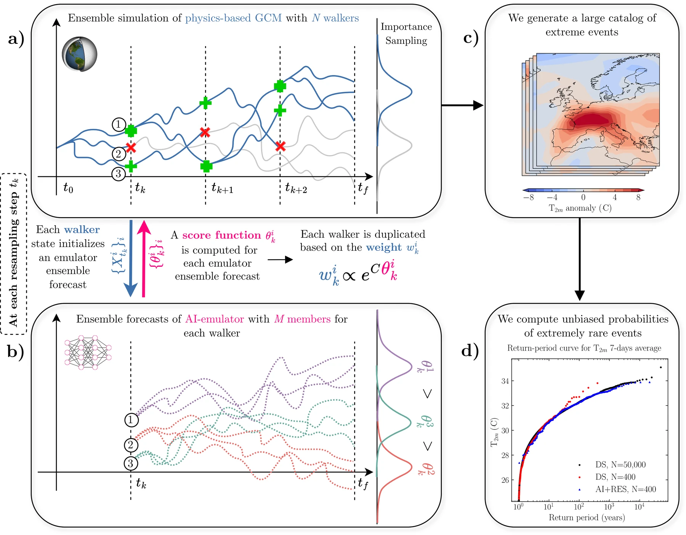
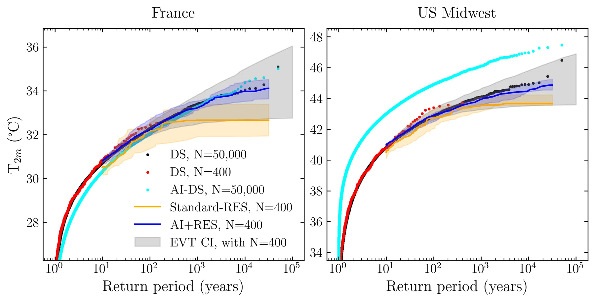
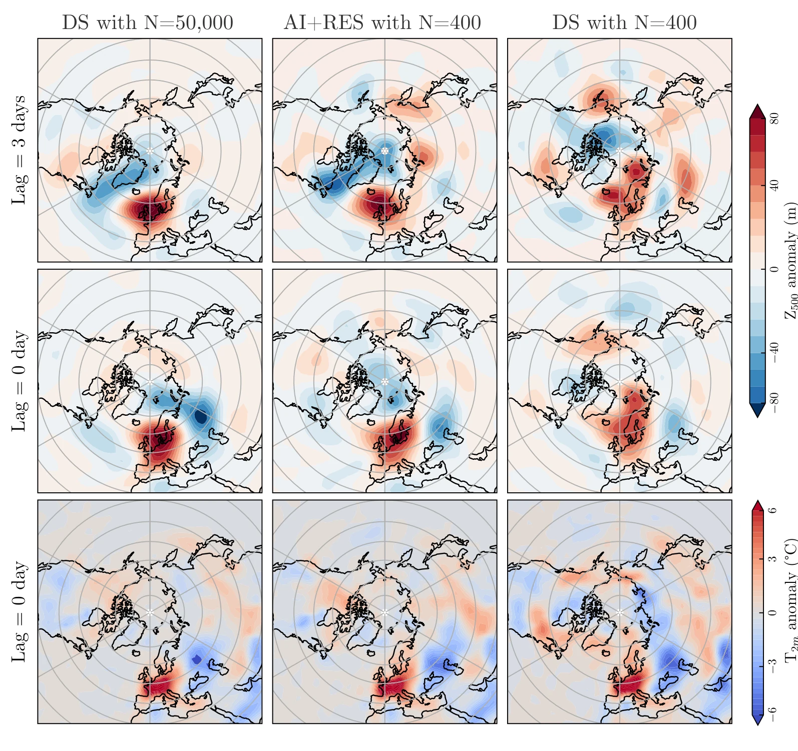

How simulations and models characterize rare weather and climate extremes: from extreme-value statistics and ensembles to rare-event algorithms and AI-boosted sampling, and what is worth solving next
Yuanqi Du
Microsoft Research
Roadmap
Today
1
Why
the tail is where the damage is, and where the data are not
2
History
five eras: fit, forecast, simulate many worlds, steer, make cheap
3
Toolbox
one principle (tilt and reweight) and the algorithms built on it
4
AI
emulators as guides, not judges: AI-boosted rare-event sampling
5
Open problems
subseasonal tails, validation, and a research agenda
Why rare events
Every few years, an extreme rewrites what we thought was possible
Europe · summer 2003
The heatwave that started attribution
70,000+excess deaths
Record heat across western and southern Europe. The first single event whose odds were attributed to human influence: at least doubled.
Robine et al. 2008 · Stott, Stone & Allen 2004
Pacific Northwest · June 2021
The heatwave statistics called impossible
49.6 °CLytton, B.C.
Canada's national record broken by 4.6 °C; more than 4σ above normal; 619 deaths in British Columbia. Extreme-value fits to the earlier record put it beyond the upper bound.
White et al. 2023 · Thompson et al. 2022 · BC Coroners Service 2022 · Bercos-Hickey et al. 2022
Europe · summers 2022–2024
The new normal
62,775heat deaths, 2024
61,672 in 2022 and 47,690 in 2023. Disaster-loss tables still largely omit heat: Munich Re's 2025 statistics state that heatwaves are not included.
Ballester et al. 2023 · Gallo et al. 2024 · Janoš et al. 2025 (Nat. Med.) · Munich Re 2026
Texas grid, February 2021
Largest firm load shed in US history (23,418 MW); 4.5 million customers lost power; about $130 bn in losses. The cold itself was not unprecedented.
FERC–NERC 2021 · Busby et al. 2021 · Doss-Gollin et al. 2021
Derna, Libya, September 2023
1-in-300 to 1-in-600-year rainfall; two 1970s dams designed from short records failed; about 4,000 deaths confirmed.
World Weather Attribution 2023
Hurricane Helene, 2024
219 deaths and $79.6 bn in the US, with catastrophic rain far inland in the Appalachians.
Smith, NOAA Climate.gov 2025
How rare was it? Could it have been worse? Could we have seen it coming? Did warming change the odds?
Why rare events · design standards
Society already designs for events no one has ever observed
annual probability
who designs to it
1 in 100 yr
US floodplain mapping
the "100-year flood"
1 in 200 yr
insurer capital (EU Solvency II)
99.5% value-at-risk over one year
1 in 10,000 yr
UK nuclear design basis
natural external hazards
1 in 100,000 yr
Netherlands flood-mortality target
for everyone behind the dikes, by 2050
"probable maximum"
US dams and nuclear plants
16,000+ high-hazard dams, 50 nuclear plants
3 hours / yr
GB and French grid adequacy
RTE estimates it from 200 simulated years
7.7%
chance that an 80-year record contains even one true 1-in-1,000-year event
The UK regulator stops at 1-in-10,000 years because going further "had the potential to distort the risk picture".
2025AI forecasts go operational at ECMWF; "gray swan" limits exposed
2026AI-boosted rare-event sampling (PRL)
Each era added a tool and none replaced the last. The best answers today combine all five.
History · era 1 · statistics of extremes
Era 1: fit the tail of the data, then extrapolate
Maxima of long blocks (a year, a summer) have only three possible limit laws (Fisher & Tippett 1928, Gnedenko 1943), unified as the generalized extreme value law:
The return level $z_R$ solves $G(z_R)=1-1/R$: the level exceeded on average once every $R$ years (Gumbel).
It became engineering law: after the 1953 North Sea flood, the Netherlands set dikes for central Holland to a 1-in-10,000-year water level.
But the shape parameter $\xi$, which decides the far tail, is the hardest thing to estimate from 70 years.
Fisher & Tippett 1928 · Gnedenko 1943 · Jenkinson 1955 · Gumbel 1958 · Pickands 1975 · Coles 2001 · demo: synthetic "hottest day of the year" with a known GEV law ($\xi=-0.2$), L-moment fits, 90% bootstrap bands
History · era 2 · chaos and ensembles
Era 2: chaos turns every forecast into a probability
Lorenz 1963: a three-variable convection model is deterministic, yet tiny errors grow exponentially. Lorenz 1969: for the atmosphere the limit is a few days for weather systems and at most a few weeks for the largest scales.
Epstein 1969, Leith 1974: so forecast the whole distribution, with an ensemble of perturbed runs. Operational at ECMWF and the US NMC since 1992.
The two lineages share a birthplace: ENIAC ran the first computerised Monte Carlo in 1948 and the first numerical weather forecast in 1950.
Hasselmann 1976: fast weather acts as noise on the slow climate. Climate models became stochastic dynamical systems, and their rare excursions became questions of large deviations (Freidlin & Wentzell).
An extreme is now a tail probability of a simulated ensemble, not only of the record.
Lorenz, J. Atmos. Sci. 1963 · Lorenz, Tellus 1969 · Epstein, Tellus 1969 · Leith, Mon. Wea. Rev. 1974 · Hasselmann, Tellus 1976 · Freidlin & Wentzell 1984 · demo: Lorenz-63, 260 members from a cloud of size 0.02
History · era 3 · attribution and large ensembles
Era 3: if we can simulate weather, we can simulate many worlds
"Will it ever be possible to sue anyone for damaging the climate?"Myles Allen, Nature, 2003
Stott, Stone & Allen 2004: whether the 2003 heatwave was caused by us is "ill-posed", but we can estimate how much we raised its risk: at least doubled, with more than 90% confidence.
This needs the probability of the same event in two climates: volunteer-computing ensembles (climateprediction.net: 25,000 users on its first weekend), then large ensembles (d4PDF: more than 5,000 simulated years per climate) and UNSEEN (forecast ensembles reused as extra years).
Attribution turned an unanswerable question into a ratio of two tail probabilities, which is exactly what needs sampling.
Allen, Nature 2003 · Stott, Stone & Allen, Nature 2004 · Pall et al., Nature 2011 · Massey et al. 2015 · Kay et al. 2015 · Mizuta et al. 2017 · Thompson et al. 2017 · NASEM 2016
History · the record-shattering problem
One event, many answers: the Pacific Northwest heatwave of 2021
approach
answer
extreme-value fit to the record before 2021
impossible: beyond the fitted upper bound
rapid attribution (statistics + models)
about 1-in-1,000 years today; at least 150× less likely without warming
forecast-based attribution (ECMWF)
at least 8× (2–50×) more likely; doubling every ~20 years
a large climate-model ensemble (CESM2)
anomalies beyond 4.5σ: about once in 100,000 years
ensemble boosting (CESM2)
about 2,500 years (95%: 2,000–4,000); even hotter storylines are plausible
"Estimated return levels based on observations up to the year before the event suggested that reaching such high temperatures is not possible in today's climate."Zeder et al., GRL 2023
The answer depends on how the tail is sampled. Records are too short; models must be sampled well.
Bercos-Hickey et al. 2022 · Philip et al., ESD 2022 · Leach et al., Nat. Commun. 2024 · McKinnon & Simpson 2022 · Bloin-Wibe et al., WCD 2025 · Fischer et al., Nat. Commun. 2023 · Zeder et al. 2023
The setting · what we compute
The setting: one model, one observable, four questions
A model of the climate
$X_{t+\delta t}=F(X_t)+\text{noise}$
a climate model (GCM), a weather model, or an AI emulator; the state $X_t$ holds $10^{6}$ to $10^{9}$ numbers
Unbiased for any score $\xi$; the variance is smallest when $\xi$ is the committor. Cost grows like $N\log(1/p)$, not $1/p$.
In climate: collapse of the Atlantic overturning, transitions between jet states, and, with early splitting (TEAMS), sudden rainfall and heat extremes.
A decade of rare-event sampling inside climate models
year
who
model
event
what it reached
method
2018
Ragone, Wouters & Bouchet
PlaSim
90-day European heatwaves
return times of 106–107 yr for ~103 yr of compute; a wavenumber-3 pattern
cloning
2019
Webber, Plotkin, … Weare
WRF
Hurricanes Earl and Joaquin
many more Category-5 realizations than direct runs at equal cost
DMC
2019
Castellana, … Dijkstra
AMOC box model
overturning collapse
~15% chance of partial collapse in 100 yr; full collapse below 10−9
TAMS
2021
Ragone & Bouchet
CESM1.2
hot summers, France and Scandinavia
return times of 105–106 yr from ~1,000 simulated summers
cloning
2024
Le Priol, Monteiro & Bouchet
PlaSim
South Asian heat seasons
527 millennial seasons, more than 5× cheaper than an 8,000-yr run
cloning
2024
Cini, Zappa, Ragone & Corti
PlaSim-LSG
AMOC weakening
collapses unprecedented in a 2,000-yr control run
cloning
2024
Sauer, … Ragone
PlaSim-LSG
Arctic summer sea-ice loss
return times of 105 yr at the cost of a 3,000-yr run
cloning
2026
Finkel & O'Gorman
aquaplanet GCM
daily rain and heat extremes
5–10× faster: a 150-yr return period from 20 simulated years
TEAMS
Typical gains: 10–1,000× at fixed cost. Persistent events suit cloning; transitions suit splitting; sudden events need splitting that starts early, or a forecast.
Methods · storylines
Storylines (what could happen) versus statistics (how likely)
Ensemble boosting
Restart a model 5 days to 3 weeks before a simulated extreme with round-off perturbations: storylines 2.5 °C hotter than the parent event at 80–98% lower cost, but no probabilities.
Gessner et al. 2021 · Fischer et al. 2023
Instantons and minimum action
The single most likely path to an event: rogue waves, hurricane intensification (~10× savings with an adjoint). Gives mechanism, and only log-asymptotic probability.
Freidlin & Wentzell · Dematteis et al. 2018 · Plotkin et al. 2019
Gradients through AI models
Optimize the initial state of a differentiable emulator: a Pacific Northwest heatwave 3.7 °C hotter than any of 75 physics members; a hurricane turned into a Sandy 20 hPa deeper. "Do not inform on their probability."
Vonich & Hakim 2024 · Whittaker & Di Luca 2026 · Hakim & Agrawal 2026
Putting the weights back
Boosting is one generation of splitting without weights. Adding levels and weights (TEAMS) recovers unbiased probabilities.
The same move could turn optimized AI storylines into weighted samples: instanton-centred importance sampling, or a learned control with Girsanov weights.
Finkel & O'Gorman 2024, 2026 · Ebener et al. 2019
Storylines and statistics are the same samples, with and without their weights.
Methods · learning the guide
The committor is the forecast, and the optimal guide
$q(t,x)=\mathbb P(E\mid X_t=x)$
the optimal splitting score (AMS, TAMS)
$\log q$ is the optimal cloning potential (DMC)
$\sigma^{\!\top}\nabla\log q$ is the zero-variance control (Doob)
$-\log q$ is the value function of stochastic optimal control
From labels
CNN heatwave forecasts on 8,000 simulated years are still "in a regime of lack of data".
Jacques-Dumas et al. 2022 · Miloshevich et al. 2023
From short trajectories
Operational S2S hindcasts reused to estimate stratospheric warmings with multi-century return periods; temporal-difference learning stays accurate with polynomially many transitions.
Finkel et al. 2021, 2023 · Strahan et al. 2023 · Cheng & Weare 2024
Inside the rare-event algorithm
A committor learned from the algorithm's own data drives TAMS for AMOC collapse.
Lucente et al. 2022 · Jacques-Dumas et al. 2024 · Esclapez et al. 2026
As a control problem
Committor estimation recast as stochastic optimal control, with off-policy value-matching losses: no rare labels needed.
Hartmann & Schütte 2012 · Nüsken & Richter 2021 · Du et al. 2026
History · era 5 · AI emulators
Era 5: AI makes simulation thousands of times cheaper
Brute force for a 1-in-1,000-year event goes from decades to weeks, but on emulators with ~8 vertical layers, coarse grids and untested tails.
Throughputs as reported, different resolutions and hardware: Kochkov et al. 2024 · Hohenegger et al. 2023 · Cresswell-Clay et al. 2025 · Chapman et al. 2025 · Watt-Meyer et al. 2025
AI · what emulators get wrong
AI emulators are superb on average, and weakest in the tail
Record-breaking extremes
ECMWF's physics model beats GraphCast, Pangu-Weather and FuXi on record-breaking heat, cold and wind at nearly all lead times; the AI models under-predict how often and by how much records fall.
FourCastNet trained without Category 3–5 hurricanes cannot forecast a Category 5. It can learn them from other ocean basins, but not invent them.
Sun, Hassanzadeh et al., PNAS 2025
Heat peaks
Most of six AI emulators underestimate the peak intensity of extreme heat; the physics model has higher recall.
Decancq et al. 2026 (preprint)
Changing tails
Generative downscaling mostly underestimates end-of-century changes in extreme rainfall, even when trained on future simulations.
Rampal et al. 2025 (preprint)
But inside the training distribution…
GenCast beats the ECMWF ensemble on 97.2% of 1,320 targets, including 99.99th-percentile exceedances of local temperature.
Price et al., Nature 2025
A 7,424-member AI hindcast of summer 2023 found heatwaves hotter than the physics ensembles started from the same states.
Risser, Mahesh, Collins et al. 2026 (preprint)
AI emulators are excellent proposal generators and unreliable final judges of the far tail.
AI · two ways
Two ways to use an AI emulator for rare events
Option A
Replace the physics
Run $10^4$–$10^6$ cheap emulator years and count.
fast, and huge ensembles become possible
but you measure the emulator's tail: its biases, its blind spots, its gray swans
Option B
Let the emulator guide the physics
The physics model runs every trajectory; the emulator's forecasts decide which ones to clone.
the estimate stays unbiased for the physics model
emulator errors only cost variance; a better emulator means a bigger speed-up
Use the emulator's forecast skill, not its climate statistics.
AI · the method
AI-boosted rare-event sampling (AI+RES)

Fig. 1 of Lancelin et al. 2026 (PRL), CC BY 4.0
Physics model: PlaSim climate model, stationary climate. Event: 7-day mean temperature over France or the US Midwest, 1–8 August.
400 walkers start on 2 July; every 5 days each one launches a 100-member forecast with Pangu-PlaSim, an emulator trained on 100 simulated years. The forecast mean $\theta$ is its score.
Diffusion Monte Carlo: walkers are cloned or killed by $e^{\,V_k-V_{k-1}}$ with $V_k=C_k\tilde\theta_k$; the weights telescope, so
Only physics trajectories are ever counted. The emulator is a guide, never a source of samples.
Lancelin, Wikner, Dubus, Le Priol, Abbot, Bouchet, Hassanzadeh & Weare, Phys. Rev. Lett. 137, 064201 (2026) · CC BY 4.0 · DMC: Webber et al. 2019; Abbot et al. 2021
AI · results
400 physics runs reach the 50,000-year event

Fig. 2 of Lancelin et al. 2026. Black: 50,000 direct runs (truth). Blue: AI+RES with 400. Red: 400 direct runs. Cyan: the emulator alone. Orange: rare-event sampling with a persistence score.
AI+RES matches the 50,000-member truth out to its limit, in both regions.
400 direct runs: accurate only to ~50 years, 1,000× shorter.
Persistence score (classic rare-event sampling): saturates beyond ~100 years and suggests a false upper bound. Today's heat does not predict a heatwave two weeks out.
The emulator alone: biased in mean and variability, about 2 °C too hot over the Midwest.
Cost: more than 100× cheaper than direct sampling at 10,000-year return periods; extreme-value fits on the same 400 runs have uncertainty up to 4× wider.
Lancelin, Wikner, Dubus, Le Priol, Abbot, Bouchet, Hassanzadeh & Weare, Phys. Rev. Lett. 137, 064201 (2026) · CC BY 4.0
AI · intuition
Why it works: AI guides, physics judges (a toy with an exact answer)
Physics: daily temperature anomalies with 5-day memory. Event: a 7-day heatwave on a fixed date. Emulator: deliberately wrong: too persistent, 25% too strong, 0.3 °C too warm.
Sampling the emulator is biased everywhere.
Steering by the heat seen so far is unbiased on average, but a typical run misses a sudden event.
Steering by the emulator's forecast of the event: weights $e^{C(\theta_t-\theta_{t-1})}$ telescope to $e^{CA}$ for any guide, so the estimate stays unbiased even with a bad emulator.
Our toy, real simulations. 400 physics runs per estimate, 24 independent repetitions; reference curve exact.
AI · storylines with statistics
Statistics and storylines: what a 100-year-plus heatwave looks like

Fig. 4 of Lancelin et al. 2026: composites of events beyond 100 years. Rows: 500 hPa height 3 days before, at onset, and temperature.
Three days before onset, the 50,000-run truth shows a ridge over the British Isles flanked by a Labrador Sea trough.
AI+RES with 400 runs recovers it. 400 direct runs instead show a spurious anomaly north of Scandinavia.
Every sampled trajectory is a physically consistent storyline with a known weight, so the catalog answers "how likely?" and "what does it look like?" at once.
Lancelin, Wikner, Dubus, Le Priol, Abbot, Bouchet, Hassanzadeh & Weare, Phys. Rev. Lett. 137, 064201 (2026) · CC BY 4.0
AI · limits
Read the fine print, and look at the headroom
A simplified climate model
PlaSim in a stationary climate: "this work does not address how faithfully PlaSim rare-event statistics represent the real world."
Conditional return periods
All walkers start from one 2 July state; unconditional estimates are left for future work.
A deterministic, atmosphere-only emulator
No soil moisture: for rare French events its 10-day forecast correlation is about zero, which caps the speed-up there.
Forecasts are not free
Here the emulator is only ~10× faster than PlaSim; the scheme pays off when the physics model is far more expensive.
Headroom
With a perfect forecaster (the physics model forecasting itself), variance speed-ups reach ~800×, against ~10× with today's emulator at the same ensemble size.
Probabilistic, land-coupled emulators, or a learned committor, could close much of that gap.
Lancelin, Wikner, Dubus, Le Priol, Abbot, Bouchet, Hassanzadeh & Weare, Phys. Rev. Lett. 137, 064201 (2026) · CC BY 4.0 (main text and supplement, Figs. S6 and S8)
Open problems · subseasonal forecasting
Weeks 3 to 6: the "predictability desert" where early action lives
Too late for the memory of today's weather, too early for the ocean to dominate. Yet this is the lead time for action:
water managers moving reservoir releases
grid operators securing reserves for a cold, windless fortnight
heat-health plans and humanitarian forecast-based financing, triggered by a forecast probability crossing a threshold
Heatwaves are predictable 3–4 weeks ahead in favourable cases, cold spells 2–3 weeks; rainfall extremes least.
Vitart, Robertson & Anderson 2012 · Vitart et al., BAMS 2017 · Mariotti et al., BAMS 2020 · Domeisen et al., BAMS 2022 · Coughlan de Perez et al. 2015 · schematic redrawn
Open problems · subseasonal forecasting
Machine learning is crossing the desertLester Mackey and colleagues, 2017–2026
2017–18
Subseasonal Forecast Rodeo
US Bureau of Reclamation + NOAA, real time, western US. Team StillLearning: 1st in weeks 3–4 temperature, 2nd in weeks 5–6 precipitation.
USBR 2019
2019
Regression + analog ensembles
With debiased CFSv2: skill +40–50% (temperature) and +129–169% (precipitation), 2011–2018.
Hwang et al., KDD 2019
2021
Learning when answers arrive late
Online ensembling with optimism and delay: forecasts are only verified weeks after they are issued.
Flaspohler et al., ICML 2021
2023
Adaptive bias correction
ECMWF skill +60–90% (temperature), +40–69% (precipitation); Shapley values locate the windows of opportunity (MJO, polar vortex).
Mouatadid et al., Nat. Commun. 2023
2026
Probabilistic bias correction
First for every variable and lead time in ECMWF's AI Weather Quest; doubles the skill of ECMWF's AI model; week-3 skill for extreme heat +51%, for floods +76–92%.
Guan, …, Weyn, Mackey, Nature 2026
1st
every variable and lead time, ECMWF AI Weather Quest (autumn 2025): ahead of 6 operational centres and 34 teams
×2
subseasonal skill of ECMWF's own AI forecasting system after correction
+51%
week-3 Brier skill for extreme heat (above the 95th percentile)
+76–92%
flood-forecast skill for catalogued floods, 2016–2026
The lesson so far: cheap, adaptive, statistically principled corrections of physics ensembles beat end-to-end AI at these leads, and the 2026 paper is the first in the line to target extremes.
Open problems · subseasonal × rare events
A subseasonal forecast of an extreme is a committor
$q(t_0,x_0)=\mathbb P\big(\text{heatwave in week 4}\;\big|\;X_{t_0}=x_0\big)$
Today an ensemble estimates it by brute force: relative error $\sqrt{(1-q)/(Nq)}$
An open problem worth a team
start from today's analysis ensemble
an AI emulator scores, the physics model clones toward the event (AI+RES), or a learned control $\nabla\log q$ steers it
calibrate with PBC-style corrections and learn online as outcomes arrive
verify reliability of 1%–0.1% probabilities with tail-calibration diagnostics
We found no published system that does this at weeks 3–6.
Rare-event sampling + subseasonal post-processing = calibrated early warnings for the events that matter most.
Open problems · where to work
Which problems are worth our time?
problem
impact
tractable
fit for ML + sampling
why
1
Heat extremes: how bad could it get?
the deadliest hazard; large-scale temperature is where emulators are strongest; AI+RES and boosting are proven pieces
2
Grid stress: cold, windless, dark weeks
statutory tail metrics (3 h/yr of lost load); smooth large-scale drivers; grid operators already engaged
3
Validating 1-in-1000-year estimates
no regulator or insurer can trust AI-assisted tails without it; a statistics and ML strength
4
Storms, floods and design rainfall (PMP)
16,000+ US high-hazard dams; NASEM asks for model-based PMP within a decade; convection is hard
5
Subseasonal forecasts of extremes
early warning pays roughly 10 to 1; big ML gains already (Mackey et al.); tails at weeks 3–6 are open
6
Attributing record-shattering events
becoming operational (Copernicus, 2027) and asking for ML; counterfactual tails are the hard part
7
Simultaneous breadbasket failures
systemic risk, but climate and crop models underestimate the joint tail
8
AMOC and other tipping points
enormous stakes, but disagreement between models dominates sampling error
One ranking, by impact × tractability × fit. Evidence: Janoš et al. 2025; ONR 2020; NASEM 2024 (PMP) and 2026 (attribution); Global Commission on Adaptation 2019; Kornhuber et al. 2023; Baker et al. 2025; van Westen et al. 2024; Lancelin et al. 2026.
Open problems · validation
How do you validate a 1-in-1000-year number with 80 years of data?
1
Check the moderate tail out of sample
10- to 50-year levels against observations, with tail-calibration diagnostics and weighted scores
2
Check the mechanism
composites of simulated extremes against observed analogues: blocking, soil moisture, wave trains
splitting and cloning estimators are provably unbiased for the simulator; physical upper bounds as sanity checks
5
Treat every new record as a test
out-of-sample, with corrections for the selection bias of studying events because they happened
The honest bottom line
When the physics model runs the trajectories and AI only scores them, AI errors cost variance, not bias.
What remains is the simulator's own fidelity in the tail: western European heat extremes are rising faster than models simulate, and none of 170 runs reproduces the circulation trend behind it.
Vautard et al., Nat. Commun. 2023 · Kornhuber et al., PNAS 2024
Sampling error is now the solvable part. Model error in the tail is the frontier.
Open problems · a research agenda
Where ML and sampling can move the needle
1
Learn the committor, steer with it
Learn $q(x)=\mathbb P(E\mid x)$ inside an emulator with label-free control or temporal-difference losses; use it to clone and split the physics model.
builds on: Lucente et al. 2022 · Jacques-Dumas et al. 2024 · Cheng & Weare 2024 · Du et al. 2026
2
Unbiased emulator → physics corrections
Multi-fidelity and prediction-powered estimators: the emulator does the volume, a few paired physics runs remove its bias.
builds on: Peherstorfer et al. 2016, 2018 · Angelopoulos et al. 2023 · Gruber et al. 2023
Learn the forecast, steer the physics, keep the weights.
Thank you!
Questions are very welcome.
Companion long read with live demos: Simulating the Unprecedented Figures from Lancelin et al. (PRL 2026) are reproduced under CC BY 4.0. All other figures are original; every toy demo is a real simulation checked against an exact answer.
GKTL is DMC with the path-dependent potential $V_k=k\int_0^{t_k}A\,\dd t$. With $V_k=\log h_k$ (the committor) the weights are martingale increments and the final population is exactly $P(\cdot\mid E)$.
Return times from weighted trajectories (Lestang et al. 2018)
$-\log\mathbb E_P[e^{-W}]=\min_Q\{\mathbb E_Q[W]+\mathrm{KL}(Q\Vert P)\}$: the optimal tilt is a KL-regularized control problem, which is what neural samplers and SOC solvers learn.